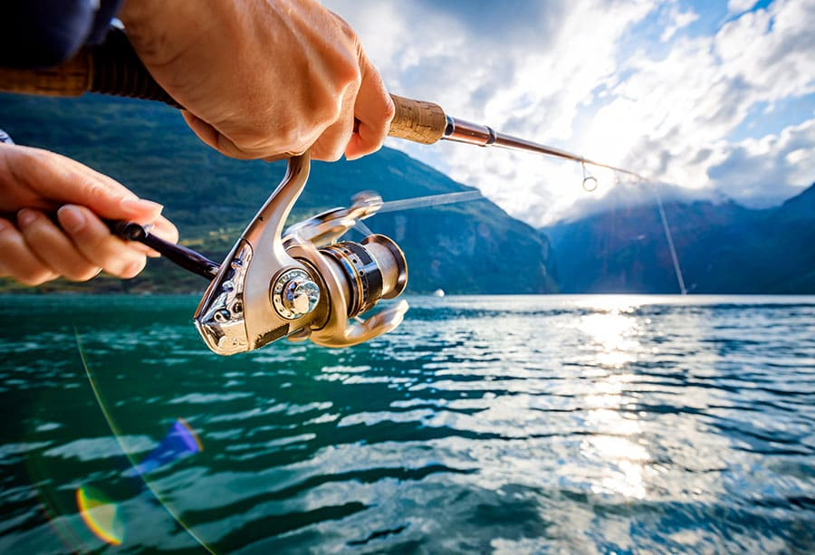
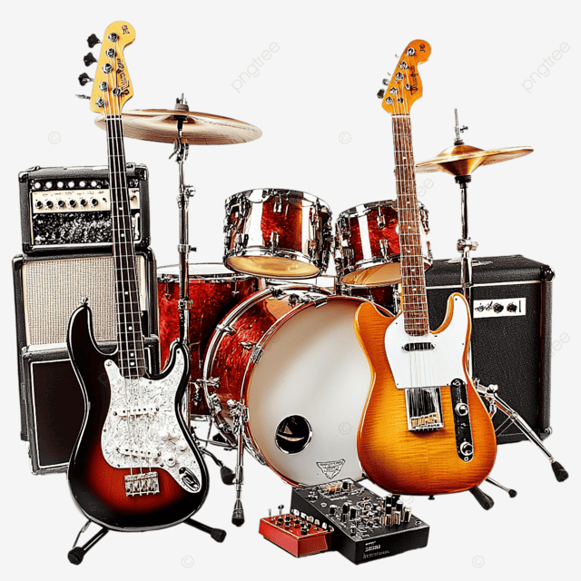
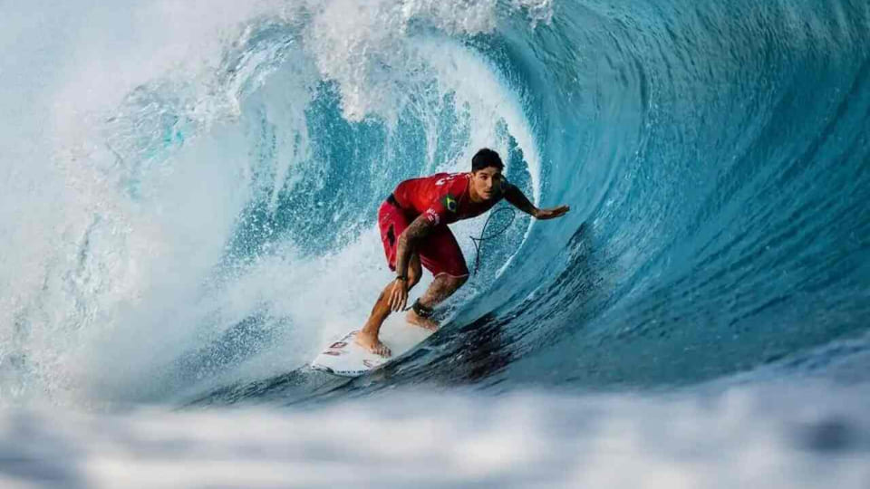

Explore Seus Interesses e Paixões!
Começando na Jardinagem: Dicas para Iniciantes
A jardinagem é um hobby relaxante e recompensador que pode transformar seu espaço. Para começar, escolha plantas adequadas ao seu clima e nível de luz solar. Comece com ervas ou suculentas, que são mais fáceis de cuidar. Certifique-se de ter boas ferramentas, como uma pá de mão, luvas e um regador. Acompanhe o crescimento das suas plantas e aprenda com a experiência!

Os Benefícios de Aprender um Novo Idioma
Aprender um novo idioma vai muito além de apenas se comunicar em outro país. Estudos mostram que o bilinguismo pode melhorar as habilidades cognitivas, como a resolução de problemas e a multitarefa, além de atrasar o aparecimento de doenças neurodegenerativas. Comece com aplicativos de idiomas, aulas online ou intercâmbios culturais para mergulhar na nova língua.

Apaixonada por fotografia? Aprenda como cultivar este hobby!
O passatempo pode elevar a sua qualidade de vida, diminuir o estresse, criar oportunidade de fazer novas amizades e ampliar os seus horizontes. Caso a escolha seja a fotografia, o que era diversão se transforma em uma espécie de poesia, uma arte.
Futebol, vôlei e esportes coletivos
Os esportes coletivos, como futebol e vôlei, oferecem uma ótima oportunidade de se exercitar enquanto se diverte com outras pessoas. Além dos benefícios físicos, como melhoria da resistência cardiovascular e coordenação motora, essas modalidades também promovem a colaboração, o trabalho em equipe e a socialização.
Tênis ou beach tennis
Se você gosta de esportes que envolvem agilidade, coordenação e estratégia, o tênis ou o beach tennis são ótimas opções. Essas modalidades esportivas oferecem uma excelente forma de exercício aeróbico, além de promoverem a concentração e a interação social. Você pode jogar em quadras específicas ou até mesmo em praias com amigos e familiares.

Yoga
Enquanto os esportes mencionados anteriormente têm um foco mais intenso no aspecto físico, o yoga oferece uma abordagem mais holística para o bem-estar. Através de posturas, respiração e meditação, o yoga promove o equilíbrio entre o corpo e a mente. Além de melhorar a flexibilidade, força e equilíbrio, essa prática pode ajudar a reduzir o estresse e promover a calma interior.

Cozinhar
Para muita gente, cozinhar é mais uma obrigação do que uma atividade prazerosa, no entanto, é possível mudar essa lógica, separando um dia da semana para fazer receitas de comidas ou bebidas que você goste muito. Nesse sentido, você pode preparar tudo com calma, ouvindo uma música ou ouvindo um podcast, por exemplo, e aproveitando ao máximo o momento e os processos.

Pescar
as pessoas que apreciam uma boa pescaria nem veem o tempo passar. Se você está num momento de correria intensa, talvez aquele ditado “tá nervoso? vai pescar!” se enquadre perfeitamente. O melhor: você pode apreciar um peixinho depois, né?

Tocar um instrumento musical
Mas, para aqueles que ainda não tocam, esse pode ser um excelente hobby. Primeiramente, é necessário escolher o instrumento que quer aprender e depois se dedicar um tempo a isso. Além de se distrair, você poderá acompanhar seu progresso. E aos que já tocam algum instrumento, é só escolher um novo e continuar com esse aprendizado.

Surf
O surf é um esporte que trabalha a resistência do corpo, ajuda a fortalecer a musculatura e aumenta o equilíbrio. É ainda um meio de entrar em contato com a natureza e se desafiar!

Referências